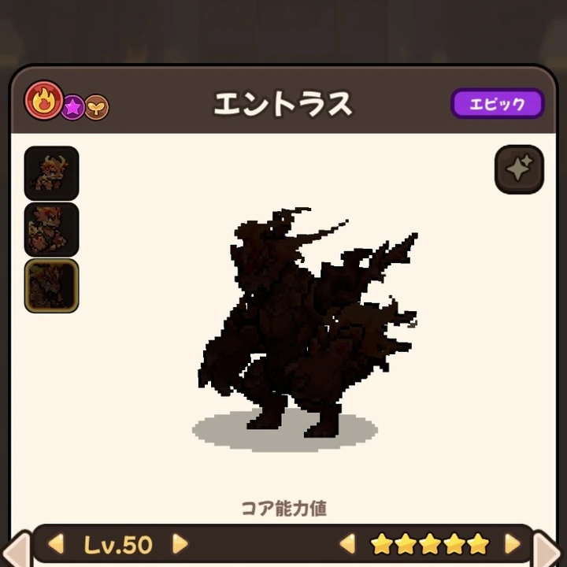

基本情報
- レアリティ
- Epic（エピック）
- 属性
- 炎・夢・地
- 攻撃区分
- 物理
- 主な獲得先
- ラテアの門
EPIC DRAGON
ユーザー提供画像をもとに登録した★5 Lv.50確認済みデータです。

図鑑｜★5 Lv.50被撃時、25%の確率で相手を火傷状態にする。炎属性ドラゴンは火傷状態が適用されない。
最も基本的な物理攻撃。炎属性で攻撃し、エネルギーを1回復する。
太陽を爆発させる炎属性攻撃で敵に大ダメージを与え、敵を10%の確率で火傷状態にする。この攻撃はクリティカルが発生する確率が15%高い。戦闘ごとに1回のみ使用可能。
| HP | 攻撃 | 防御 | 魔力 | 抵抗 | 速度 | 合計 |
|---|---|---|---|---|---|---|
| 1,062 | 1,427 | 975 | 1,335 | 975 | 1,062 | 6,836 |